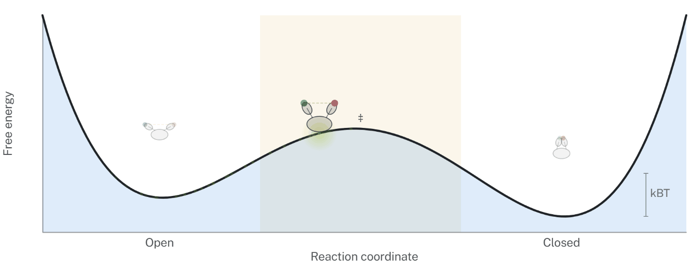
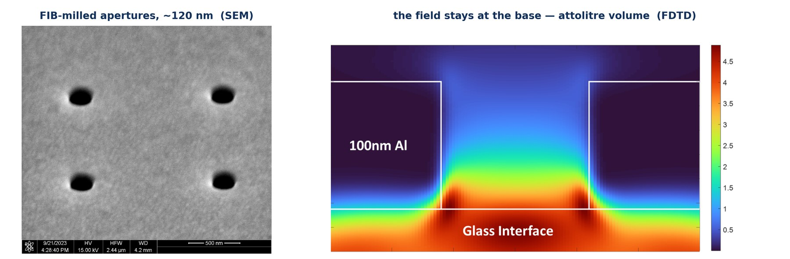
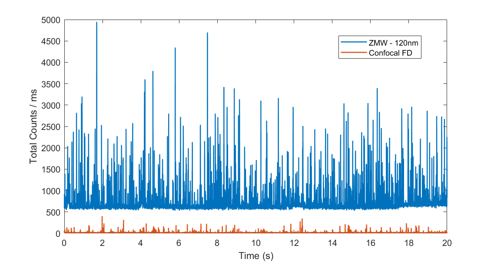
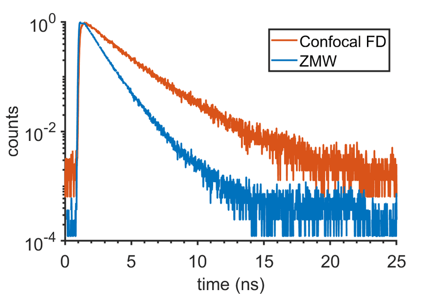
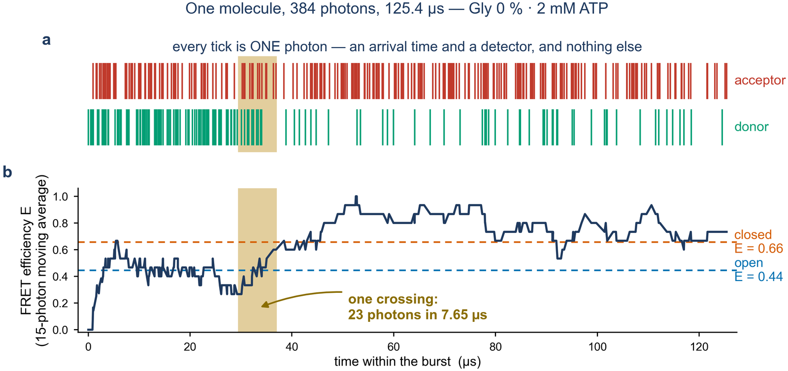
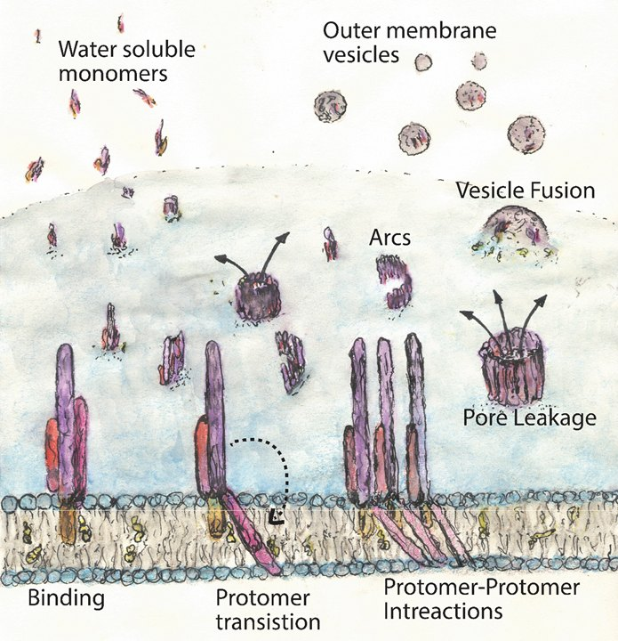
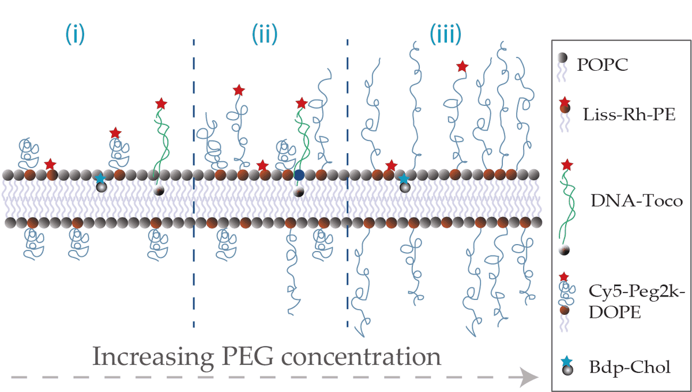

Watching single molecules change shape, move and assemble
I study single protein molecules: how they change shape, how they move through crowded surroundings, and how they assemble. This page covers what I do now and what I did for my doctorate. My plans for my own laboratory are on the Future Directions page.
A bulk experiment averages over billions of molecules at once. The average is smooth and reproducible, and it hides the things I most want to see: the short-lived intermediate, the rare crossing, the molecule that does not behave like its neighbours. A rate constant says how often something happens. It never says what happens while it is happening.
So I watch one molecule at a time, and try to watch it fast enough to catch the event itself. That takes three things working as one instrument. Single-molecule FRET, a pair of dyes that works as a ruler a few nanometres long, reports the distance between two parts of the protein. Metal nanostructures that concentrate light, zero-mode waveguides and gold nanorods, make each molecule bright enough to follow through a microsecond. Statistical analysis, photon by photon, then reads the molecule’s path from the arrival time of each photon rather than from averages. Without the photons there is nothing for the statistics to work on, and without the statistics the photons are only noise.
Chemical engineering, one molecule at a time
Chemical engineering was built for the bulk. Its subjects describe reactors, columns and pipelines carrying moles of molecules at a time, and its control loops hold a process steady by averaging the fluctuations away. Every one of those subjects has a counterpart at the scale of a single molecule, and those counterparts are my work. Three things change on the way down. The average becomes a distribution. The fluctuations stop being noise to be filtered out and become the measurement itself. And the equipment shrinks to a nanostructure that still has to be designed, built and costed like any other piece of plant.
| Subject | In a plant | In one molecule |
|---|---|---|
| Reaction engineering | Rate constants and conversions, averaged over moles of molecules; the residence-time distribution of a reactor. | The time one molecule takes to cross the barrier between two shapes, and the distribution of those times: a residence-time distribution for the barrier region, measured directly (section 1). |
| Transport phenomena | Viscosity, diffusivity and mass-transfer coefficients of a bulk fluid; Fick’s and Newton’s laws; continuum models that assume the medium is uniform. | The friction one protein domain feels as it swings shut; the diffusion of one molecule through a crowded membrane, where the continuum assumption fails; mass transfer of molecules into a volume of a zeptolitre (section 4, direction 2). |
| Thermodynamics | Free energies per mole, equilibrium compositions, phase diagrams; fluctuations negligible at the scale of a vessel. | A free-energy landscape in units of kBT. The molecule fluctuates across it all the time, and those fluctuations are what the measurement records. |
| Measurement and control | Sensor signals filtered, averaged and fed to a controller; the noise is removed before the number is used. | A stream of photons, one arrival time at a time, read by inference built for counting noise: hidden Markov models and maximum likelihood (section 3). |
| Equipment and scale-up | Reactors and columns designed to a specification, then scaled up; cost per unit of product. | Nanoapertures and antennas designed to a photon budget, then replicated from a master so a chip has a cost per unit (section 2, direction 3). |
| Nucleation and growth | Crystallisation from a supersaturated solution: a lag, a rare nucleus, then growth; particle size distributions. | A toxin assembling into a pore on a membrane: a lag, a rare stable nucleus, then rapid growth, counted one subunit at a time (section 4). |
This is not an analogy. Kramers’ expression for a rate constant and the Stokes–Einstein relation were written for molecules and have been applied to reactors and fluids ever since. Measuring them on one molecule takes the subjects back to where they started, with instruments that did not exist when they were written, and that is what makes the work chemical engineering rather than a borrowing from physics.
How fast a molecule can be watched is set by how fast its photons arrive, and that is not only a matter of instrumentation. It decides whether a measurement and a simulation are describing the same event or merely the same molecule.
More detail
Resolution here is the time needed to collect enough photons to call a conformational state, taken as 25 photons, so it falls as one over the photon rate. An ordinary confocal measurement collects some tens of thousands of photons per second during a burst, which by this rule is about half a millisecond, two decades too slow. All-atom simulation has long reached the band from the other side. The dashed mark at ten million per second is what the nanorod work is aiming for. Event durations are order-of-magnitude values from the literature; the transition path is what we measure.
Until recently the two did not meet. All-atom molecular dynamics could produce microseconds of trajectory, while an ordinary single-molecule measurement could not resolve much below half a millisecond, so a simulated transition path could be compared against a measured rate but never against a measured path. Raising the photon rate closes that gap from the experimental side. The events that matter, the microsecond crossings, now fall inside both windows at once, and the same quantity can be computed and observed rather than inferred.
Postdoctoral work · Weizmann Institute of Science, 2022 to now
1. Transition paths: timing how proteins change shape

Proteins work by switching between shapes, or conformations, and each spends almost all of its time settled in one of them, a valley on its free-energy landscape. The crossing itself, the transition path, lasts only microseconds (τtp ~ 1–10 µs), yet it is where the mechanism of the change is decided. An enzyme opening and closing over its substrates is our current test case; the same measurement applies to any protein whose function rides on a conformational switch.
In the Gilad Haran Lab at the Weizmann Institute of Science, we make the molecule brighter with metal nanostructures, so that enough photons arrive to follow it across the barrier. The work has three parts:
- Timing the crossing: measuring how long the transition path lasts directly from the arrival times of photons, rather than inferring it from how often crossings happen.
- What slows it down: changing the viscosity of the solvent to separate the friction from the surrounding water from the protein’s own internal friction.
- Checking the analysis: testing the photon-by-photon estimator on simulated data where the true answer is known, before trusting it on real molecules.
2. Brighter molecules: zero-mode waveguides and gold nanorods
More detail
The drawing is a slice through a three-dimensional solution: molecules drawn fainter are in front of or behind the hole, over solid metal, which is why most of them pass across the mouth without entering. Nothing is tethered; every surface is passivated with PEG-2k, about 5 nm thick, so nothing sticks. The walls are drawn with the 50 nm undercut of our apertures: the etch widens the hole beneath the mouth, so the floor is wider than the opening. The decay length is computed for 532 nm excitation in a 100 nm aluminium film; the green is that laser. The trace counts donor (green, upward) and acceptor (red, downward) photons per time bin from whatever is in the volume, as in a confocal transit.
A dye molecule gives off only so many photons per second. In an ordinary confocal microscope, which focuses a laser to a spot about a micrometre across, a crossing that lasts a few microseconds leaves just one or two of them. Our answer is to put the molecule next to metal, which changes how strongly it absorbs light and how fast it gives the light back.
A zero-mode waveguide is a hole in a thin aluminium film, narrower than the wavelength of the light: about 120 nm across here, against green light of 532 nm. Light cannot travel through such a hole. It enters from the glass below and fades within a few tens of nanometres, so it lights only a tiny volume at the bottom of the hole, about a zeptolitre (10−21 litre).
- More photons: near the metal a dye is excited more strongly and emits faster, so each molecule gives a brighter burst, roughly ten times brighter than in a confocal microscope in our measurements below.
- One molecule at a time: the lit volume is so small that it holds about one molecule even in a fairly concentrated solution, so freely diffusing enzymes can be watched one at a time, with nothing tethered.



A second route to more photons: gold nanorods in an ordinary microscope
The nanorod experiments keep the ordinary confocal microscope but attach the dye-labelled enzyme to a gold nanorod, a particle much smaller than the wavelength of light, through a PEG polymer layer and a biotin–streptavidin bridge that hold the dyes at a set distance from the metal. The rod gathers light at its tips (a plasmon resonance) and makes nearby dyes absorb and emit faster, so each pass through the focus gives a far brighter burst than a free enzyme does.
More detail
Both panels show a diffraction-limited focal volume of about a femtolitre. The donor and acceptor traces share one scale across the two panels, and the balance between red and green follows the conformation of whichever enzyme is in the focus. The enzyme sits roughly 10 nm from the metal on a PEGylated rod, held by the biotin–streptavidin stack, so the dyes are in the plasmonic hotspot without being quenched. The rod diffuses more slowly, so its bursts last longer. Slide the enhancement to see the free-enzyme bursts shrink by comparison.
3. Reading the data: photon by photon, and image by image

More detail
The molecule is adenylate kinase. Below the ticks is the FRET efficiency from a moving average over fifteen photons, with the open and closed levels marked. Bin this into milliseconds and the crossing disappears into one point.
Single-molecule data are photon-limited, and the figure above is the reason the analysis has to be built around that. A microsecond crossing is a few tens of photons. Binning arrival times into millisecond histograms averages exactly the event away, so every method I use works from the photon record itself.
H2MM: hidden Markov analysis photon by photon
H2MM, developed in the Gilad Haran Lab, fits a hidden Markov model directly to the arrival time and colour of each photon in a single-molecule FRET measurement. It returns the number of conformational states, their FRET efficiencies and the rates between them, and the most likely state path through the data. I use it, with extensions for transition-path times and batch processing, on freely diffusing enzymes in zero-mode waveguides and on nanorod conjugates.
Single-molecule image analysis from the Ph.D.
Movies of dye-labelled proteins on supported lipid bilayers, recorded by TIRF microscopy, were turned into numbers with pipelines I built and published as a protocol:
- Single-particle tracking: localisation and linking with u-track or TrackMate, then mean-squared and instantaneous squared displacement analysis to classify diffusion and separate mixed populations.
- Binding kinetics: rate constants from the appearance of particles on the membrane over time.
- Oligomer stoichiometry: single-molecule photobleaching step counting, with a binomial correction for incomplete labelling, which gave the ClyA oligomer distributions in the PNAS and JoVE papers.
- Housekeeping: drift correction, trace extraction and particle counting for image stacks.
Doctoral work · Indian Institute of Science, 2015 to 2022
4. Membranes and toxins: how bacterial pores assemble

During my doctoral research at the Indian Institute of Science (IISc) with Prof. Rahul Roy, in a long collaboration with Prof. K. G. Ayappa's group, I studied how bacterial pore-forming toxins punch holes in cell membranes.
The experiments used model membranes spread on glass (supported lipid bilayers), imaged by TIRF microscopy, which lights only a thin layer next to the glass, so that single molecules on the membrane could be tracked and counted:
- Cholesterol helps the pore assemble: we found that cholesterol stabilises the partly built assemblies of Cytolysin A (ClyA) on the membrane, helping them grow into the twelve-subunit pore (PNAS 2018).
- Flexibility matters: with colleagues who simulate proteins, we showed that the flexibility of the ClyA molecule is key to its ability to burst membranes (J. Phys. Chem. B 2023).
- Crowded membranes: how proteins move and assemble on membranes covered with grafted polymer, a laboratory model of the sugar coat (glycocalyx) on real cells (JoVE 2022; manuscript in preparation).
Crowded membranes: grafted polymers as a tunable obstacle
Cell membranes are crowded by a dense layer of glycans and grafted macromolecules. We rebuild that crowding on supported lipid bilayers with grafted PEG, tune the layer from sparse mushrooms to a dense brush, and follow single molecules in it with TIRF microscopy. How strongly a molecule feels the layer depends on how far it protrudes above the bilayer rather than on what it is made of. Once the brush is fully developed, protruding molecules slow down more than simple diffusion predicts (they become sub-diffusive), and the layer controls whether membrane-bursting toxins can reach the membrane and assemble. Lifting the bilayer off the glass on a polymer cushion separates the brush’s own effect from an extra slowdown that belongs to the substrate (manuscript in preparation).
